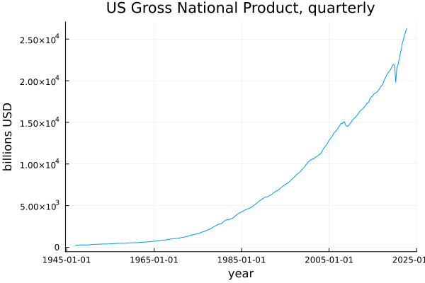
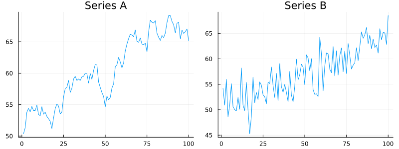
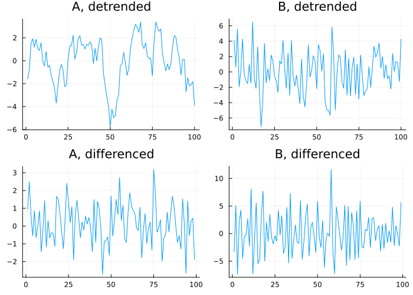
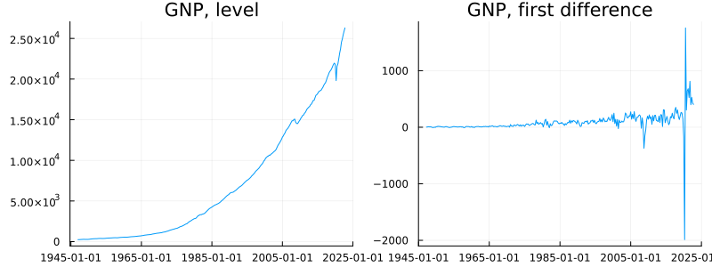
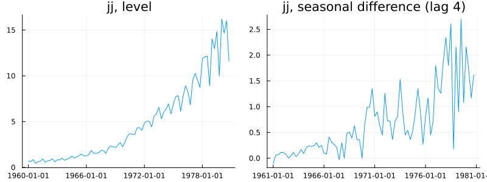
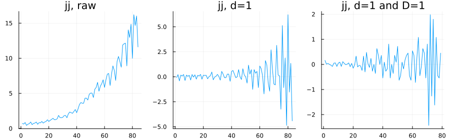
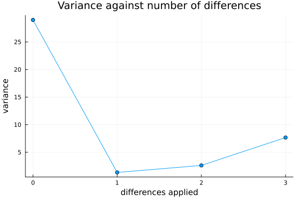

Differencing and Integration
using TSAnalytics, Plots, Statistics
gnp = dataset("GNP")
plot(gnp.date, gnp.value; title="US Gross National Product, quarterly",
xlabel="year", ylabel="billions USD", legend=false)
Three hundred and four quarters, 1947 to 2022. The mean of the first twenty of them is about $290 billion. The mean of the last twenty is about $22,574 billion — seventy-eight times larger. "The mean of this series" is therefore not a meaningful quantity in any sense that would help you; it depends entirely on which twenty years you happened to average. That is awkward, because Chapter 1's entire demonstration rested on a mean and its standard error, and if the mean itself is not a fixed target, the problem runs deeper than a standard error being wrong by some factor. Nothing built so far assumes a moving target, and this series is nothing but one.
Two series that look alike and need opposite treatment
using Random
Random.seed!(5)
n = 100
rw = cumsum(randn(n)) .+ 50
trend_st = 50 .+ 0.15 .* (1:n) .+ randn(n) .* 3.0
p1 = plot(rw; title="Series A", legend=false)
p2 = plot(trend_st; title="Series B", legend=false)
plot(p1, p2; layout=(1,2), size=(800,300))
Before reading on, decide which of these two has an underlying straight line running through it and which does not. Most people cannot tell reliably, and that is exactly the point being made.
One of these two series is trend-stationary: there really is a fixed line underneath it, and it wanders around that line by a bounded amount forever. The other is difference-stationary: there is no line to find, because the series is simply the running total of its own past shocks, each one permanent, none of them ever reverting. They look similar because both drift upward across a hundred points, and drifting is what an eye is built to notice first.
function detrend(y)
t = collect(Float64, 1:length(y))
X = hcat(t, ones(length(y)))
beta = X \ y
return y .- X * beta
end
p1 = plot(detrend(rw); title="A, detrended", legend=false)
p2 = plot(detrend(trend_st); title="B, detrended", legend=false)
p3 = plot(diff(rw); title="A, differenced", legend=false)
p4 = plot(diff(trend_st); title="B, differenced", legend=false)
plot(p1, p2, p3, p4; layout=(2,2), size=(700,500))
println("A detrended, acf(1:3) = ", round.(acf(detrend(rw), 1:3).values, digits=3))
println("B detrended, acf(1:3) = ", round.(acf(detrend(trend_st), 1:3).values, digits=3))
println("A differenced, acf(1:3) = ", round.(acf(diff(rw), 1:3).values, digits=3))
println("B differenced, acf(1:3) = ", round.(acf(diff(trend_st), 1:3).values, digits=3))A detrended, acf(1:3) = [0.813, 0.644, 0.494]
B detrended, acf(1:3) = [-0.005, -0.029, 0.063]
A differenced, acf(1:3) = [0.016, -0.04, 0.041]
B differenced, acf(1:3) = [-0.474, -0.08, 0.109]Fitting a straight line and subtracting it does exactly what you would want on Series B — clean, uncorrelated residuals, autocorrelations near zero at every lag checked. Applied to Series A it fails outright: the residuals stay heavily autocorrelated, still visibly wandering, still carrying most of the structure that was supposed to be removed, because there was never a genuine straight line in A for the fitted one to match. Differencing does the reverse. On A it produces clean, close to uncorrelated noise. On B it produces something over-differenced, with a sharp negative correlation at lag one that this chapter returns to properly in a moment.
Each treatment fixes exactly one of these series and actively damages the other, and the two originals were close to indistinguishable by eye a moment ago. That is the entire argument for Chapter 9's unit-root tests: this is not a question you can settle by looking, however carefully, so you need a test that can settle it instead.
It is worth saying plainly that this distinction carries real economic weight, not just a modelling nicety. If GDP is trend-stationary, a recession is a temporary deviation below a path the economy will eventually return to. If it is difference-stationary, a recession is a permanent reduction in the level, with no path to return to at all. Economists have argued over which is closer to true for real GDP for several decades, and the argument has never fully settled.
Differencing, properly
A first difference asks one question — how much did the series move between one observation and the next — and discards the level entirely. Writing it with the backshift operator B, where By_t = y_{t-1}, the first difference is (1-B)y_t. The notation earns its keep once seasonal differencing needs expressing too: a difference across a full seasonal cycle of length m is (1-B^m)y_t, and having a symbol for "shift back by one" makes both operations instances of the same idea rather than two unrelated procedures.
p1 = plot(gnp.date, gnp.value; title="GNP, level", legend=false)
p2 = plot(gnp.date[2:end], tsdiff(gnp.value); title="GNP, first difference", legend=false)
plot(p1, p2; layout=(1,2), size=(800,300))
The level series has no stable mean, as already shown; the difference series does — it hovers around a constant, positive average growth per quarter, with no long-run drift in that. What has been thrown away is the level itself: the difference series cannot tell you whether the economy is large or small, only how fast it is currently changing. That loss is real, and it is exactly what tsundiff exists to reverse when a level is needed back.
Seasonal differences, and doing both
jj = dataset("jj")
p1 = plot(jj.date, jj.value; title="jj, level", legend=false)
p2 = plot(jj.date[5:end], tsdiff(jj.value; lag=4); title="jj, seasonal difference (lag 4)", legend=false)
plot(p1, p2; layout=(1,2), size=(800,300))
The quarterly pattern is gone from the second panel. The trend is not — it is still climbing, because a seasonal difference removes seasonality and leaves everything else exactly where it was, which is precisely why it is almost never used by itself.
d1 = tsdiff(jj.value)
d1D1 = tsdiff(tsdiff(jj.value); lag=4)
p1 = plot(jj.value; title="jj, raw", legend=false)
p2 = plot(d1; title="jj, d=1", legend=false)
p3 = plot(d1D1; title="jj, d=1 and D=1", legend=false)
plot(p1, p2, p3; layout=(1,3), size=(900,280))
This progression is the differencing behind the airline model, and it will be met again by name in Chapter 20. Each step removes one kind of structure and leaves the rest for the next step. Mathematically the order does not matter — (1-B)(1-B^4) and (1-B^4)(1-B) are the same operator applied twice — but looking at the intermediate picture is still worth doing, because it is how you judge whether the second step was actually needed or whether the first one alone would have done. There is also a cost worth naming: d=1 together with D=1 on quarterly data removes five observations from the front of the series before anything else happens, and on a short series that is not a trivial fraction — which connects directly to where this chapter ends.
back = tsundiff(tsdiff(gnp.value); xi=[gnp.value[1]])
maximum(abs.(back .- gnp.value))0.0Round trip: difference the level series, then undo it with tsundiff — which, checking the source directly, is simply an alias for diffinv under a more mnemonic name, not a separate lower-level primitive underneath it — and the reconstruction lands back on the original to within floating-point error. That is not as trivial as it sounds. Differencing throws the level away entirely; reconstructing it requires knowing the one starting value the difference operation discarded, and any function claiming to invert a difference without asking for that value would be guessing, not inverting.
Too much of a good thing
println("correctly differenced, acf(1:3) = ", round.(acf(diff(rw), 1:3).values, digits=3))
println("over-differenced, acf(1:3) = ", round.(acf(diff(trend_st), 1:3).values, digits=3))correctly differenced, acf(1:3) = [0.016, -0.04, 0.041]
over-differenced, acf(1:3) = [-0.474, -0.08, 0.109]Return to Series A and B from earlier. A wanted exactly one difference and got clean noise from it. B never needed differencing at all — it needed detrending — and differencing it anyway produces a large, distinctive negative spike at lag one that was not there in the raw series. Differencing a series that did not need it does not merely cost an observation; it manufactures structure, a moving-average signature that is an artefact of the operation rather than a property of the underlying data. Learning to recognise that particular shape — a sharp negative lag-one spike and comparatively little else — is a genuinely useful, transferable skill, and this is the picture where it gets learned.
v0 = var(rw)
v1 = var(diff(rw))
v2 = var(diff(diff(rw)))
v3 = var(diff(diff(diff(rw))))
plot([0,1,2,3], [v0,v1,v2,v3]; marker=:circle, title="Variance against number of differences",
xlabel="differences applied", ylabel="variance", legend=false)
The variance falls sharply after one difference, and then climbs again after the second and third. The minimum identifies how many differences the series wanted — here, one, which is what Series A needed all along. It is a genuinely useful rule of thumb, it costs four lines of code, and it appears in almost no introductory treatment of the subject despite that. It is not infallible and Chapter 9 provides the actual tests this book will lean on; treat this chart as a fast first look, not a final answer.
On a hundred-point random walk fit as ARIMA(1,1,0), on identical data fed to all three: Python's statsmodels reports nobs = 100; R's stats::arima reports nobs = 99; this package's own fit_arima reports 99 as well, matching R's n − d convention rather than Python's full-n one. What is genuinely striking is what does not move: on that same series, the log-likelihood and AIC agree across all three to every digit shown — loglik ≈ -134.2266, aic ≈ 272.4533, verified directly this session rather than assumed to transfer from a different series. The nobs disagreement, in other words, does not propagate into either of the two numbers most people actually look at.
using StatsAPI
Random.seed!(11)
y2 = cumsum(randn(100)) .+ 50
m = fit_arima(y2, (1, 1, 0))
println("TSAnalytics.jl on a fresh series -- nobs=", StatsAPI.nobs(m),
" (n=", length(y2), ", so nobs = n - d, matching R's convention)")TSAnalytics.jl on a fresh series -- nobs=99 (n=100, so nobs = n - d, matching R's convention)It propagates into AICc instead, which carries n explicitly through its correction term 2k(k+1)/(n−k−1):
| n | correction, full n | correction, n−d | difference |
|---|---|---|---|
| 100 | 0.1237 | 0.1250 | 0.0013 |
| 50 | 0.2553 | 0.2609 | 0.0056 |
| 30 | 0.4444 | 0.4615 | 0.0171 |
| 20 | 0.7059 | 0.7500 | 0.0441 |
The disagreement is invisible on a long series and material on a short one — precisely backwards from where most people would think to look for it — and AICc is the default criterion both R's auto.arima and this package's own automatic order selection use. On a twenty-point series two respected implementations, and this package, can genuinely rank two candidate models differently, for a reason that has nothing to do with either model actually fitting better.
India's Index of Industrial Production has been rebased more than once — to 2011-12, and before that to 2004-05. Splicing a rebased series onto its predecessor introduces a level shift at the join, and differencing across that join produces a single enormous spike that has nothing to do with Indian industry and everything to do with the accounting change. It is easy to spot once you know to look for it at the known rebasing dates, and easy to mistake for a real event if you do not.
Where this leaves you
You can now remove a trend two genuinely different ways, you know they are not interchangeable, and — as Series A and B showed at the start — you have no reliable way to tell, by eye, which one a given series actually needs. That gap is Chapter 9's subject. Before its tests, though, comes one more tool differencing already leaned on without naming it: the idea of combining nearby observations into one, which is what a moving average actually is.